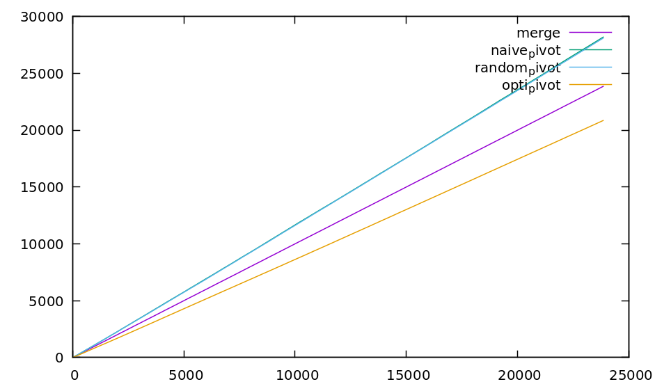

Quicksort¶
Etat du TP¶
Décrivez ici l’état d’avancement du TP.
Réponses aux questions¶
Indiquez ici les réponses aux questions posées dans le TP. Vous reprendrez le numéro de la section et le numéro de la question. Par exemple pour répondre à la question 3 de la section 2.4 vous indiquerez.
Question Rappel.1¶
- Dans les tri sur place on a :
- le tri à bulle
- le tri par tas (mais instable)
- intosort (instable aussi)
- smoothsort (instable aussi)
Question Rappel.2¶
A priori la meilleure façon de partionner un tableau c’est d’en faire des slices donc d’utiliser la notation : tab[a:b] où a et b sont des indices du tableau à fortiori ici on peut juste consigner ces slices dans une structure de donnée paralèlle ce qui limitera grandement l’espace memoire supplémentaire nécéssaire.
Question Rappel.9¶
on sais que la partition ne coute quasiment rien et est donc O(1)
en revanche il nous reste la récursion , je pense que la récursion des elements de “droite” est executée après celles de “gauche” . ceci implique que les espaces mémoires mobilisés ne sont pas sensés s’ajouter l’un a l’autre.
le meileur des cas serait alors un espace de recusrion min à n/2 on aura donc :
dans le pire des cas c’est quand on a comme pivot un element qui est a une extremité du tableau et donc qu’on se retrouve avec quasiment tout le tableau en récursion . auquel cas on aurait :
Question Pivot aléatoire.1 à 3¶
Question Pivot aléatoire.4¶
Les résultats de l’experience :
résultats tirages : (moyenne de moyennes pour des listes de taille 1 à 100 tirées 100 fois || unité = nb utilisationde cmp )
| type de tri | random_100 | increasing_100 |
|---|---|---|
| merge sort : | 242.91 | 160.03 |
| random pivot: | 286.89 | 280.47 |
| naive pivot : | 282.08 | 1695.34 |
(source dans random_100.dat et increacing_100.dat , je n’ai pas réussi à les inclures dans la doc. la dernière ligne est la moyenne , les colonnes sont dans l’ordre : merge , random , naive)
On peut observer que dans tout les cas le Merge sort est au moins aussi perfomant en terme de comparaisons effectuées.
ce qui est interessant de voir c’est que dans random_100 , la difference est faible entre un random pivot et un naive pivot et c’est parfaitement logique parceque la liste etant mélangée y prendre un pivot au hasard ou le premier qui viens reviens au même.
de même en comparant les naive_pivot et random_pivot on vois qu’il existe des Pivots plus performants que d’autres mais globalement les appels à cmp sont plus importants pour le naif.
Comme j’ai jeté un oeil à la suite je comprends qu’on peut essayer de chercher un pivot “optimum” qui vas nous permettre de stabiliser ces appels à cpm qui sont un peu anarchiques.
Question Pivot aléatoire.5¶
Comme nous l’avons vu tantôt dans la question 4 , clairement l’avantage de quicksort n’est pas dans les appel à cmp où ils sont surclassés par le merge (en tout cas codé comme il l’est actuelement ) sort mais de mon point de vue c’est la consomation en espace mémoire qui est la force de ce quicksort . En effet dans un merge sort on consomme un espace memoire proportionnel à la longueur de la liste à trier alors que dans le cas d’un quicksort on traite directement la liste donc on consomme très peu d’espace supplémentaire
Question Pivot aléatoire.6¶
dans le cas d’une liste deja triée le choix du pivot semble impacter les résultat de façon très significative en effet , un mauvais choix de pivot peu entrainer une hausse importante d’appel à cmp.
c’est logique parceque dans le quicksort on bouge les elements alors en triant quelque chose de trié au final on se sabote.
Question Pivot aléatoire.7¶
après ces experience je pense que le pire des cas est celui où le pivot se retrouve au début de la liste a chaque coup et donc que le reste de la liste à trier ne diminue que de 1 à chaque appel recursif nous donnant l’equation suivante donc on génère de sous lsite de taille 1 et n-1 :
pour le cas de base.
Ce qui suivant le cours nous donnerai du :
Question optimal Pivot.1¶
Theoriquement la meilleur valeur optimale est la médiane de l’échantillon présent dans la liste.
Question optimal Pivot.4¶
résultats tirages : (moyenne de moyennes pour des listes de taille 1 à 100 tirées 100 fois |unité = nb utilisationde cmp )
| type de tri | opti_100 |
|---|---|
| merge sort : | 268.75 |
| random pivot : | 316.84 |
| naive pivot : | 318.09 |
| opti_pivot : | 235.95 |
on fait enfin mieux que merge_sort (ouf !) on peux osberver que l’efficacité de quicksort dépends du choix du pivot et que de ce fait il faudrait approfondir l’étude de cas pour verifier si la tendance moyenne se confirme.
on peut cependant observer qu’en random_pivot on a plutot tendance à se rapprocher de optimal_pivot. Ce qui peut porte r à croire qu’en moyenne la complexité en temps de Quicksort se rapprocherai plus du meilleur des cas que du pire des cas.
Question optimal Pivot.5¶
Dans le cas de base :
puis :
Suivant ce qu’on a fait en TD on a theoriquement du :
voici une graph qui synthétise les resultats : attention les random_pivot et naive pivot sont confondus.
{kind=link}
Pivot reelement optimal ?.1¶
de toute évidence pas vraiment dans l’impentation à ce niveau car j’ai chercher la médiane un peu de façon brut de décoffrage ce qui gonfle mes utilisation de cpm.